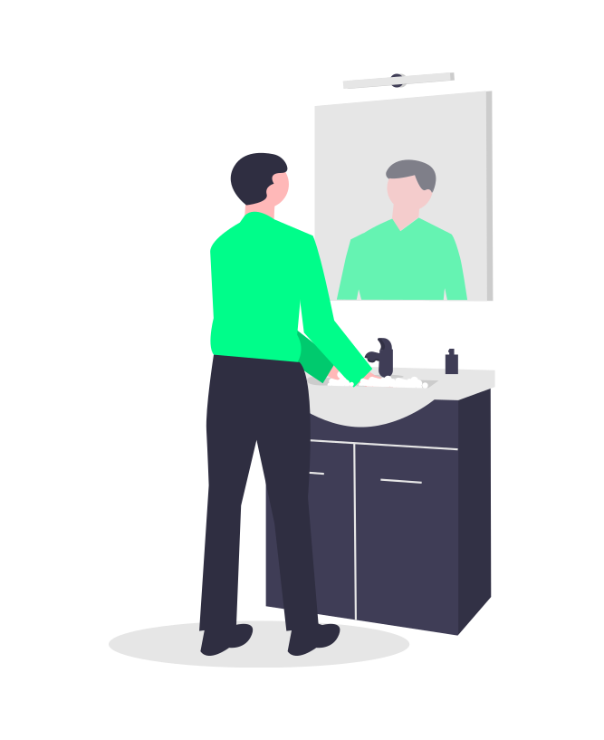

Noticias
Medidas Preventivas
Utiliza Mascarilla. ¡Salva vidas!
Lávate las manos
Manten una distancia segura
Quedate en casa lo mas que puedas

Síntomas
Los síntomas notificados por personas con COVID-19 varían desde aquellos que presentan síntomas leves hasta quienes se enferman gravemente. Los síntomas pueden aparecer de 2 a 14 días después de la exposición al virus. Las personas con estos síntomas podrían tener COVID-19:
Fiebre o escalofríos
Tos
Dificultad para respirar
Fatiga
Dolores musculares y corporales
Dolor de cabeza
Pérdida reciente del olfato o el gusto
Dolor de garganta
Congestión o moqueo
Náuseas o vómitos
Diarrea
En caso de sospechas
Conocer todos los sintomas del Covid19
Permanecer en casa en autoaislamiento, aun cuando tengas sintomas leves como tos, fiebre y dolor de cabeza, hasta que se recuerpe.
Si tiene fiebre, tos y dificultad para respirar busque atencion medica de inmediato. Primeramente llame por telefono y siga las instrucciones de su autoridad sanitaria local